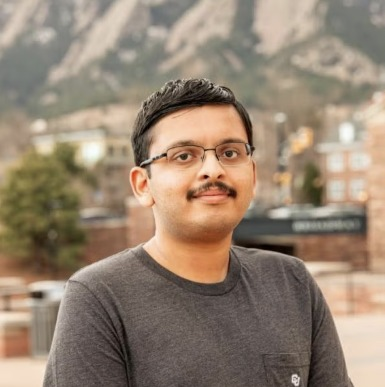

Srikrishna Bangalore Raghu
Human–Robot Interaction Motion Planning Generative Models for Robotics
Seeking a Summer 2027 research internship in motion planning and robot learning. Reach me at srba2850@colorado.edu.
I am a fourth-year PhD student in Computer Science at the University of Colorado Boulder, advised by Alessandro Roncone in the HIRO Group. My research develops learning-based motion generation models and sampling-based kinodynamic planners, deployed on real manipulator hardware rather than stopping at simulation. Lately that has meant a diffusion model that generates Franka Emika Panda trajectories at a commanded level of hesitancy, and BBoE, a bidirectional kinodynamic planner for cluttered environments.
Before Boulder I earned a B.Tech in Electrical and Electronics Engineering from PES University in Bengaluru, then spent a year as a research assistant in the Artificial Intelligence and Robotics Lab at the Indian Institute of Science, working on heterogeneous multi-robot task allocation with TurtleBot3 and ROS 2. I am looking for a Summer 2027 research internship in motion planning and robot learning.
- 2023–Present Graduate Teaching Assistant, CU Boulder — CSCI 1300, 2270, 3302 and ROBO 5000.
- 2021–2022 Research Assistant, Artificial Intelligence and Robotics Lab, Indian Institute of Science — multi-robot task allocation on TurtleBot3 via ROS 2.
